Directory
Mechanical & Industrial Engineering
Layek Abdel-MalekProfessorStochastic modelinginventory controllocationhealth care systems George AbdouAssociate Professor
George AbdouAssociate Professor Farid AlisafaeiAssistant ProfessorMechanobiologyCell and Tissue MechanicsFibrosisSkin GraftingAbigail AvoryieAdjunct Instructor
Farid AlisafaeiAssistant ProfessorMechanobiologyCell and Tissue MechanicsFibrosisSkin GraftingAbigail AvoryieAdjunct Instructor Sanchoy DasProfessorFast Fulfillment Supply ChainsOR and Analytics Application ModelsHealthcare Systems Engineeringsupply chain
Sanchoy DasProfessorFast Fulfillment Supply ChainsOR and Analytics Application ModelsHealthcare Systems Engineeringsupply chain Dibakar DattaAssociate Professorelectronicsmultifunctional devicesInterdisciplinary SciencePhilosophy
Dibakar DattaAssociate Professorelectronicsmultifunctional devicesInterdisciplinary SciencePhilosophy Zhiming JiProfessor
Zhiming JiProfessor Arijit SenguptaAssociate ProfessorIndustrial ergonomicsmanufacturing workstation Designbiomechanicsanthropometric modeling
Arijit SenguptaAssociate ProfessorIndustrial ergonomicsmanufacturing workstation Designbiomechanicsanthropometric modeling Pushpendra SinghProfessorthe direct numerical simulations of particulate multiphase fluidselectrohydrodynamic manipulation of particlesthe fluid dynamics of floating particlesfluid mechanicsHarris SnyderAdjunct Instructor
Pushpendra SinghProfessorthe direct numerical simulations of particulate multiphase fluidselectrohydrodynamic manipulation of particlesthe fluid dynamics of floating particlesfluid mechanicsHarris SnyderAdjunct Instructor Chao ZhuProfessorPhilip ZoppiAdjunct Instructor
Chao ZhuProfessorPhilip ZoppiAdjunct Instructor
George AbdouAssociate Professor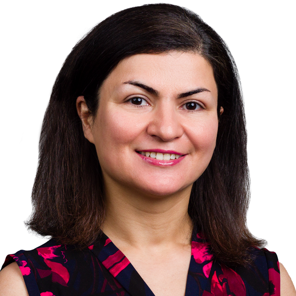
Fatemeh AhmadpoorAssistant ProfessorAdeel AkhtarAssistant ProfessorroboticsGeometric Controlshybrid systemsQuadrotorFarid AlisafaeiAssistant ProfessorMechanobiologyCell and Tissue MechanicsFibrosisSkin GraftingAbigail AvoryieAdjunct Instructor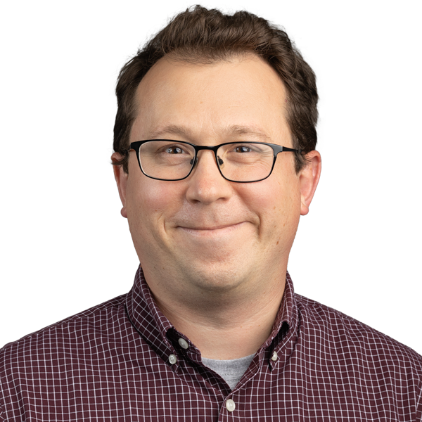
Peter BaloghAssistant ProfessorAngiogenesis and cellular-scale fluid dynamicsLarge-scale simulation of cellular-scale flowsLymphatic system transport of cancer cellsCode development and parallelization for high performance computingG. BenguAssociate ProfessorCraig BernierAdjunct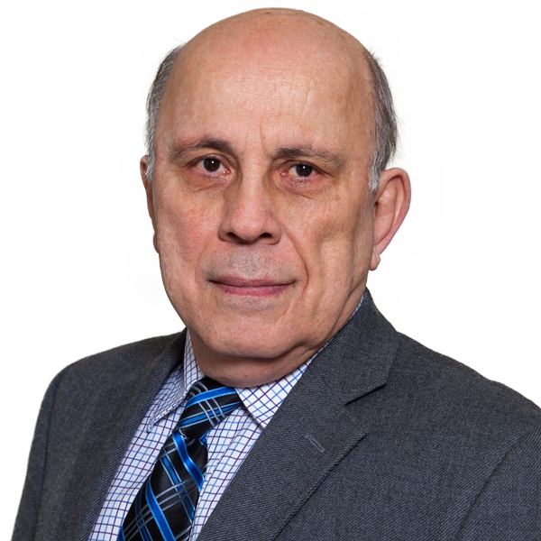
Athanassios BladikasAssociate ProfessorMichael BonchonskyUniversity LecturerShivon BoodhooDirector, Special Projects, Faculty AwardsOptimizationhealthcaremetricsproductivityWenbo CaiAssociate ProfessorMy research is in Operations Managementa field that combines methodologies and tools from multiple disciplinessuch as stochastic models and optimization techniques in operations researchgame theory in economics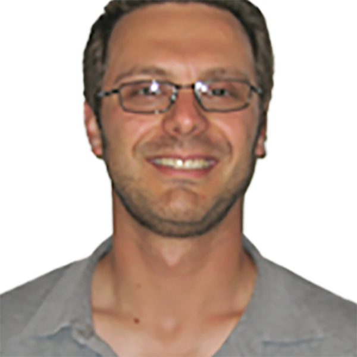
Shawn ChesterProfessorMechanics and MaterialsSanchoy DasProfessorFast Fulfillment Supply ChainsOR and Analytics Application ModelsHealthcare Systems Engineeringsupply chainDibakar DattaAssociate Professorelectronicsmultifunctional devicesInterdisciplinary SciencePhilosophy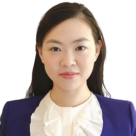
Lin DongAssistant ProfessorFunctional MaterialsEnergy HarvestingPiezoelectric MaterialsBiomedical Devices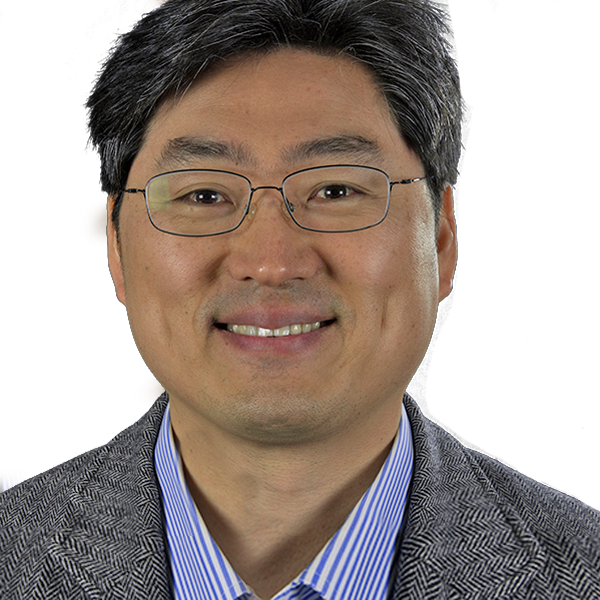
Eon Soo LeeAssociate Professor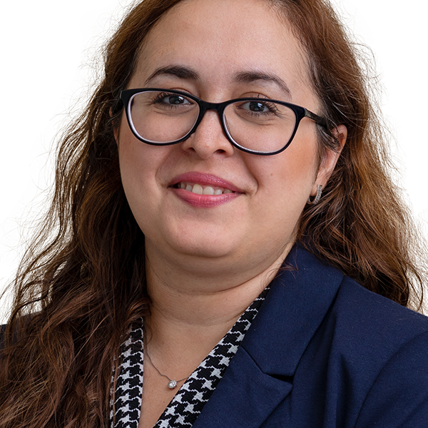
Samaneh FarokhiradAssistant ProfessorMultiscale modelingMultiphase FlowSoft MatterBiological Systems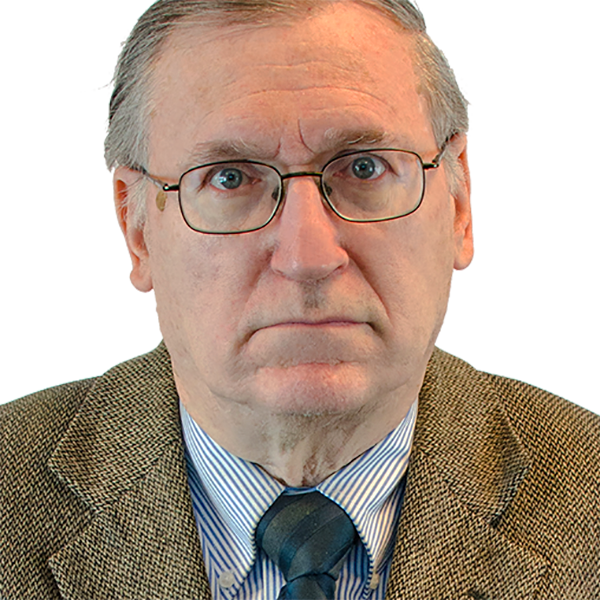
Ian FischerProfessorZhiming JiProfessor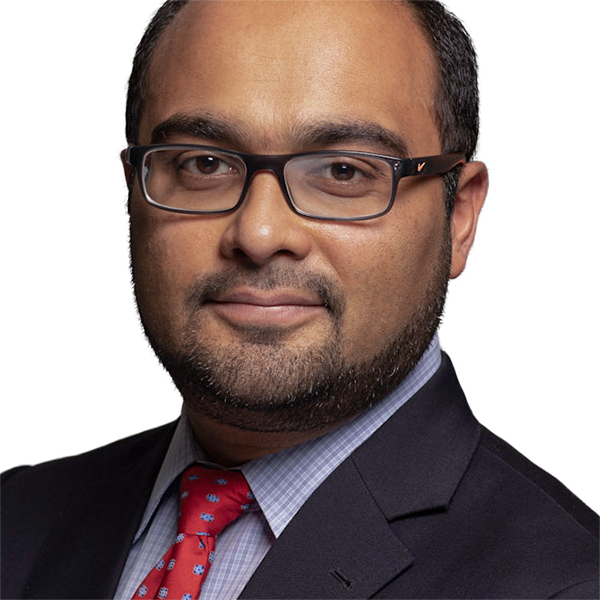
Ankush KarnikAdjunct Instructor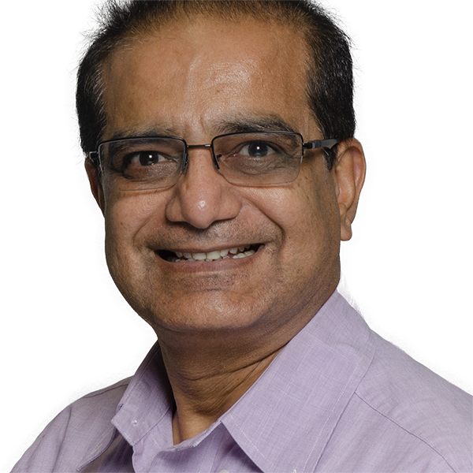
Prakash KothariAdjunct InstructorHarry KountourasSenior University LecturerXing LiuAssistant ProfessorFracture mechanicsMultiscale modelingNanomechanicsMachine learningBalraj ManiSenior University Lecturer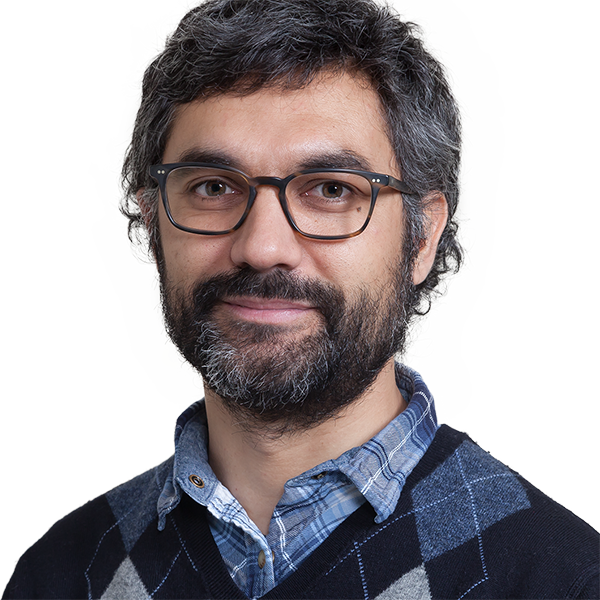
Simone MarrasAssociate ProfessorSpectral ElementsAtmospheric TurbulenceComputational NeuroscienceQuantum ComputingSwapnil MoonSenior University LecturerComputational MechanicsSmart MaterialsConstitutive ModelingEngineering DesignXiaoming MuSenior University Lecturer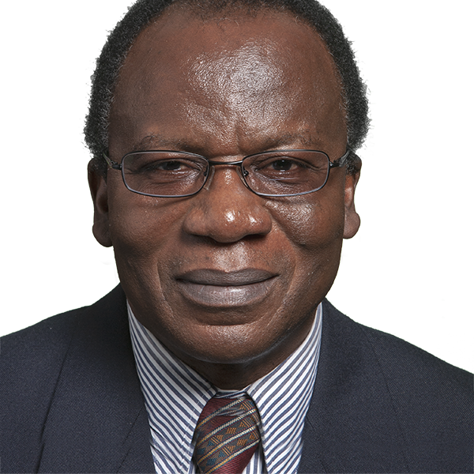
Kwabena NarhProfessorCrystallization kinetics and phase transitions in plastics processingpolymer degradationmelt extrusionsPVT measurements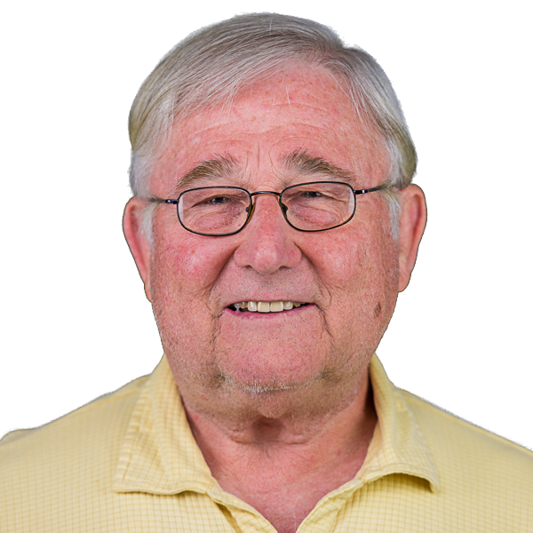
George OlsenAdjunct InstructorAlberto PadovanAssistant Professordesigncontrol of large-scale physical systemsfluid mechanicsControl Theory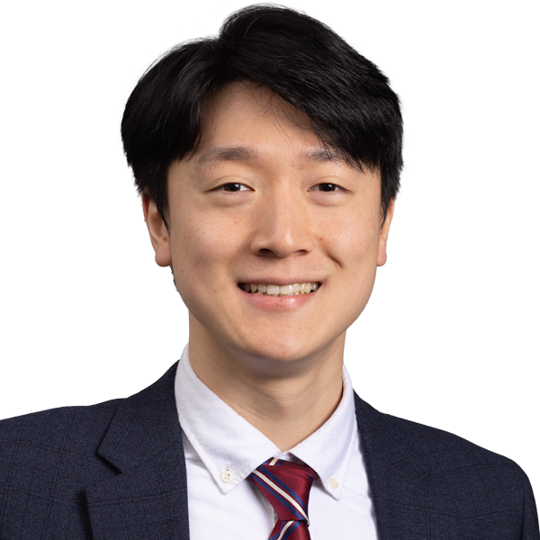
SangWoo ParkAssistant ProfessorDesign and analysis of algorithms for complex and large scale optimization problemsmainly related to electric power systems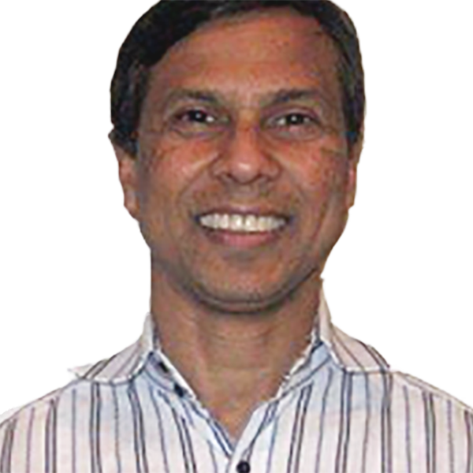
Sahidur RahmanSenior University Lecturer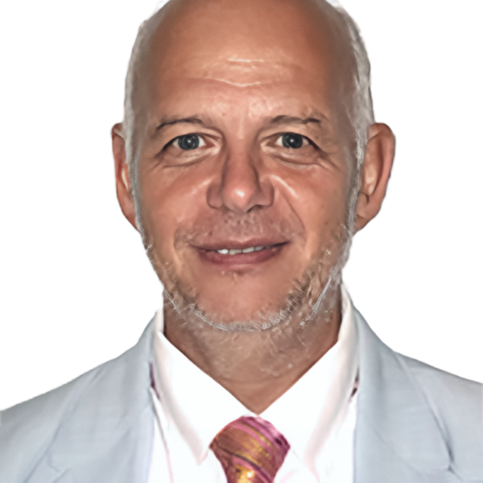
Paul RankyProfessorProductprocesssystem design engineering subjectsquality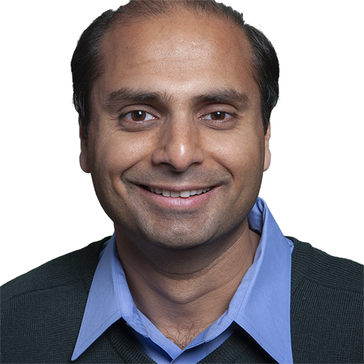
I. RaoProfessor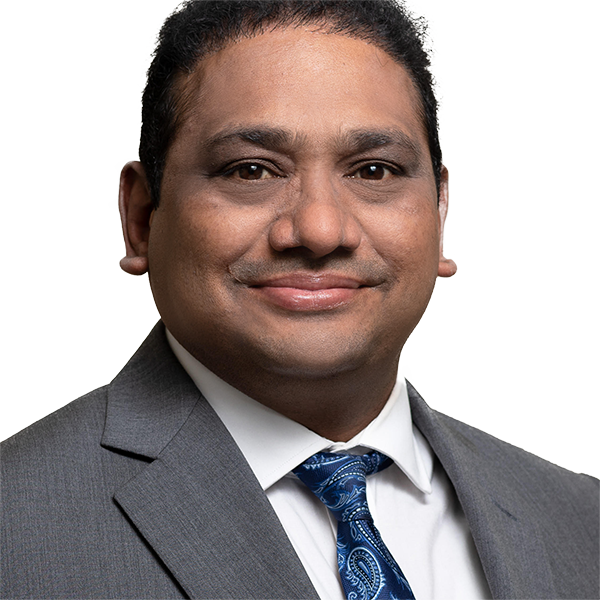
Trivikrama ReddyAdjunct InstructorAnthony RosatoProfessorgranular physicsdiscrete dynamical systemsgranular flows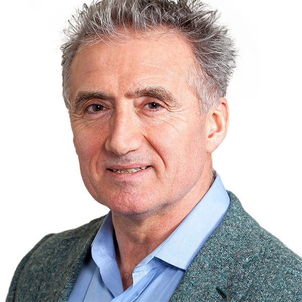
Veljko SamardzicSenior University LecturerArijit SenguptaAssociate ProfessorIndustrial ergonomicsmanufacturing workstation Designbiomechanicsanthropometric modeling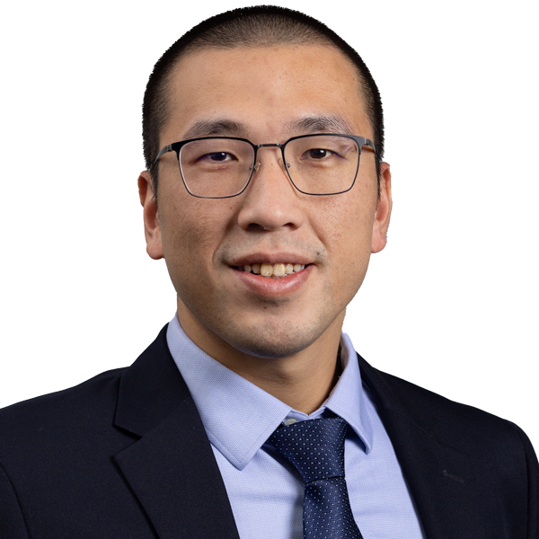
Bo ShenAssistant Professorphysics-aware generative AIHeliophysicssmart manufacturingPushpendra SinghProfessorthe direct numerical simulations of particulate multiphase fluidselectrohydrodynamic manipulation of particlesthe fluid dynamics of floating particlesfluid mechanicsHarris SnyderAdjunct Instructor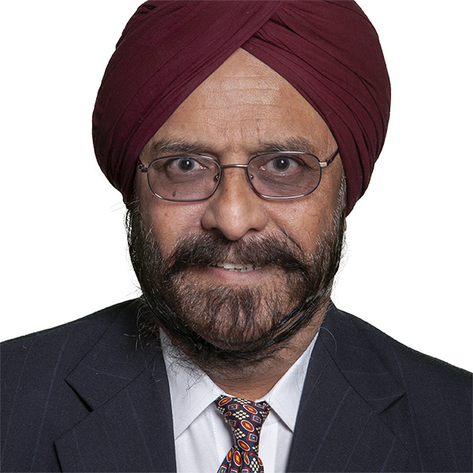
Rajpal SodhiProfessorMechanism synthesisMechanical DesignbiomechanicsRehabilitation engineeringPetras SwisslerAssistant ProfessorCollective robot behaviorsself-assembling systemsrobot mechanism designSwarm RoboticsSandra TovarAdjunct Instructor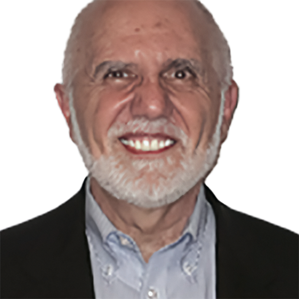
Stephen TricamoProfessorefficiencycostcontribution to the economyfulfillment of mission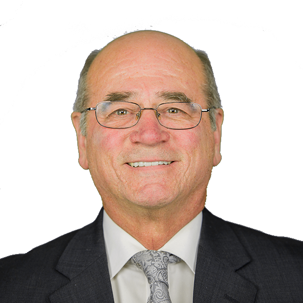
Raymond VaccariAdjunct InstructorIsmail YagciAdjunct InstructorArtificial IntelligenceSupply Chain OptimizationData Analytics and Decision Support SystemsChao ZhuProfessorPhilip ZoppiAdjunct InstructorChair
Zhiming JiProfessorProfessors
Layek Abdel-MalekProfessorStochastic modelinginventory controllocationhealth care systemsShivon BoodhooDirector, Special Projects, Faculty AwardsOptimizationhealthcaremetricsproductivityShawn ChesterProfessorMechanics and MaterialsSanchoy DasProfessorFast Fulfillment Supply ChainsOR and Analytics Application ModelsHealthcare Systems Engineeringsupply chainIan FischerProfessorKwabena NarhProfessorCrystallization kinetics and phase transitions in plastics processingpolymer degradationmelt extrusionsPVT measurementsPaul RankyProfessorProductprocesssystem design engineering subjectsqualityI. RaoProfessorAnthony RosatoProfessorgranular physicsdiscrete dynamical systemsgranular flowsPushpendra SinghProfessorthe direct numerical simulations of particulate multiphase fluidselectrohydrodynamic manipulation of particlesthe fluid dynamics of floating particlesfluid mechanicsRajpal SodhiProfessorMechanism synthesisMechanical DesignbiomechanicsRehabilitation engineeringStephen TricamoProfessorefficiencycostcontribution to the economyfulfillment of missionChao ZhuProfessorAssociate Professors
George AbdouAssociate ProfessorG. BenguAssociate ProfessorAthanassios BladikasAssociate ProfessorWenbo CaiAssociate ProfessorMy research is in Operations Managementa field that combines methodologies and tools from multiple disciplinessuch as stochastic models and optimization techniques in operations researchgame theory in economicsDibakar DattaAssociate Professorelectronicsmultifunctional devicesInterdisciplinary SciencePhilosophyEon Soo LeeAssociate ProfessorSimone MarrasAssociate ProfessorSpectral ElementsAtmospheric TurbulenceComputational NeuroscienceQuantum ComputingArijit SenguptaAssociate ProfessorIndustrial ergonomicsmanufacturing workstation Designbiomechanicsanthropometric modelingAssistant Professors
Fatemeh AhmadpoorAssistant ProfessorAdeel AkhtarAssistant ProfessorroboticsGeometric Controlshybrid systemsQuadrotorFarid AlisafaeiAssistant ProfessorMechanobiologyCell and Tissue MechanicsFibrosisSkin GraftingPeter BaloghAssistant ProfessorAngiogenesis and cellular-scale fluid dynamicsLarge-scale simulation of cellular-scale flowsLymphatic system transport of cancer cellsCode development and parallelization for high performance computingLin DongAssistant ProfessorFunctional MaterialsEnergy HarvestingPiezoelectric MaterialsBiomedical DevicesSamaneh FarokhiradAssistant ProfessorMultiscale modelingMultiphase FlowSoft MatterBiological SystemsXing LiuAssistant ProfessorFracture mechanicsMultiscale modelingNanomechanicsMachine learningAlberto PadovanAssistant Professordesigncontrol of large-scale physical systemsfluid mechanicsControl TheorySangWoo ParkAssistant ProfessorDesign and analysis of algorithms for complex and large scale optimization problemsmainly related to electric power systemsBo ShenAssistant Professorphysics-aware generative AIHeliophysicssmart manufacturingPetras SwisslerAssistant ProfessorCollective robot behaviorsself-assembling systemsrobot mechanism designSwarm RoboticsSenior Lecturers
Abigail AvoryieAdjunct InstructorCraig BernierAdjunctAnkush KarnikAdjunct InstructorPrakash KothariAdjunct InstructorHarry KountourasSenior University LecturerBalraj ManiSenior University LecturerSwapnil MoonSenior University LecturerComputational MechanicsSmart MaterialsConstitutive ModelingEngineering DesignXiaoming MuSenior University LecturerGeorge OlsenAdjunct InstructorSahidur RahmanSenior University LecturerTrivikrama ReddyAdjunct InstructorVeljko SamardzicSenior University LecturerHarris SnyderAdjunct InstructorSandra TovarAdjunct InstructorRaymond VaccariAdjunct InstructorIsmail YagciAdjunct InstructorArtificial IntelligenceSupply Chain OptimizationData Analytics and Decision Support SystemsPhilip ZoppiAdjunct InstructorUniversity Lecturers
Michael BonchonskyUniversity LecturerNo faculty match “”.